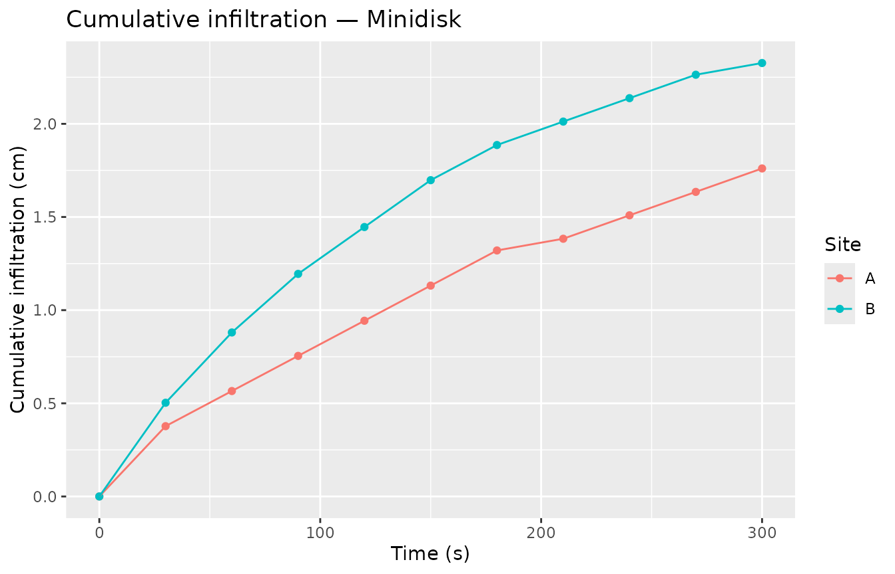

Overview
The Minidisk Infiltrometer (Decagon Devices) delivers water at a controlled tension (suction) below saturation. The Zhang (1997) method extracts the unsaturated hydraulic conductivity K(h) from a two-step analysis:
- Fit the Philip (1957) two-term polynomial to cumulative infiltration to get the conductivity proxy C₁.
- Divide C₁ by the soil-specific shape parameter A (derived from Van Genuchten parameters and the applied tension) to recover K(h).
| Step | Function |
|---|---|
| Raw readings → I(t) | infiltration_cumulative() |
| Philip two-term fit | fit_infiltration() |
| VG parameter lookup | infiltration_vg_params() |
| Analytical A (optional) | parameter_A_zhang() |
| K(h) = C₁ / A | hydraulic_conductivity_minidisk() |
1. Single-site example
1.1 Field readings
A typical Minidisk run records the reservoir volume (mL) at fixed time intervals. The disc radius is 2.25 cm (the standard instrument).
1.2 Cumulative infiltration
infiltration_cumulative() computes I = ΔV / (π r²) and
appends .sqrt_time for use in the Philip fit.
cum <- infiltration_cumulative(raw, time = time, volume = volume)
cum
#> # A tibble: 11 × 5
#> time volume .sqrt_time .volume_infiltrated .infiltration
#> <dbl> <dbl> <dbl> <dbl> <dbl>
#> 1 0 95 0 0 0
#> 2 30 89 5.48 6 0.377
#> 3 60 86 7.75 9 0.566
#> 4 90 83 9.49 12 0.755
#> 5 120 80 11.0 15 0.943
#> 6 150 77 12.2 18 1.13
#> 7 180 74 13.4 21 1.32
#> 8 210 73 14.5 22 1.38
#> 9 240 71 15.5 24 1.51
#> 10 270 69 16.4 26 1.63
#> 11 300 67 17.3 28 1.761.3 Philip two-term fit
philip <- fit_infiltration(cum,
infiltration_col = .infiltration,
sqrt_time_col = .sqrt_time)
philip
#> # A tibble: 1 × 5
#> .C2 .C1 .C2_std_error .C1_std_error .convergence
#> <dbl> <dbl> <dbl> <dbl> <lgl>
#> 1 0.0600 0.00252 0.00753 0.000396 TRUEC₁ is the quadratic (time-proportional) coefficient (cm/s); C₂ is the sorptivity term (cm/s^0.5).
1.4 Look up Van Genuchten parameters
The Decagon (2005) lookup table covers 12 USDA texture classes at suction levels 0.5–7 cm. Assume this soil is sandy loam measured at 2 cm tension.
# Attach texture and suction to the Philip fit result, then look up parameters
result <- philip |>
mutate(texture = "sandy loam", suction = 2) |>
infiltration_vg_params(texture = texture, suction = suction)
result |> select(texture, suction, .C1, .n, .alpha, .A)
#> # A tibble: 1 × 6
#> texture suction .C1 .n .alpha .A
#> <chr> <dbl> <dbl> <dbl> <dbl> <dbl>
#> 1 sandy loam 2 0.00252 1.89 0.075 3.911.5 Hydraulic conductivity
result <- hydraulic_conductivity_minidisk(result, C1 = .C1, A = .A)
result |> select(texture, suction, .C1, .A, .K_h)
#> # A tibble: 1 × 5
#> texture suction .C1 .A .K_h
#> <chr> <dbl> <dbl> <dbl> <dbl>
#> 1 sandy loam 2 0.00252 3.91 0.000645K(h) ≈ 6.45^{-4} cm/s at 2 cm tension for this sandy loam sample.
2. Multi-site workflow
For field campaigns with multiple samples, group the raw data by site and process everything in a single pipeline.
multi <- tibble(
site = rep(c("A", "B"), each = 11),
time = rep(seq(0, 300, 30), 2),
volume = c(
95, 89, 86, 83, 80, 77, 74, 73, 71, 69, 67, # site A — sandy loam
95, 87, 81, 76, 72, 68, 65, 63, 61, 59, 58 # site B — loamy sand
)
)
# Site-level metadata
meta <- tibble(
site = c("A", "B"),
texture = c("sandy loam", "loamy sand"),
suction = c(2, 2)
)
# infiltration_cumulative() returns an ungrouped tibble, so re-group before
# fit_infiltration() so it fits one model per site.
multi_result <- multi |>
group_by(site) |>
infiltration_cumulative(time = time, volume = volume) |>
group_by(site) |>
fit_infiltration(infiltration_col = .infiltration,
sqrt_time_col = .sqrt_time) |>
left_join(meta, by = "site") |>
infiltration_vg_params(texture = texture, suction = suction) |>
hydraulic_conductivity_minidisk(C1 = .C1, A = .A)
multi_result |> select(site, texture, .C1, .A, .K_h)
#> # A tibble: 2 × 5
#> site texture .C1 .A .K_h
#> <chr> <chr> <dbl> <dbl> <dbl>
#> 1 A sandy loam 0.00252 3.91 0.000645
#> 2 B loamy sand 0.00137 2.43 0.0005653. Analytical A with parameter_A_zhang()
For non-standard disc radii or suction levels not in the Decagon table, compute A analytically using the Zhang (1997) formula.
multi_result |>
select(site, .n, .alpha, suction) |>
parameter_A_zhang(n = .n, alpha = .alpha, suction = suction) |>
rename(.A_zhang = .A)
#> # A tibble: 2 × 5
#> site .n .alpha suction .A_zhang
#> <chr> <dbl> <dbl> <dbl> <dbl>
#> 1 A 1.89 0.075 2 3.82
#> 2 B 2.28 0.124 2 4.21The analytical A values should be close to the tabulated
.A retrieved via infiltration_vg_params().
4. Visualisation
multi |>
group_by(site) |>
infiltration_cumulative(time = time, volume = volume) |>
ggplot(aes(x = time, y = .infiltration, colour = site)) +
geom_point() +
geom_line() +
labs(
title = "Cumulative infiltration — Minidisk",
x = "Time (s)",
y = "Cumulative infiltration (cm)",
colour = "Site"
)
References
Decagon Devices, Inc. (2005). Mini Disk Infiltrometer User’s Manual.
Philip, J. R. (1957). The theory of infiltration: 4. Sorptivity and algebraic infiltration equations. Soil Science, 84(3), 257–264.
Zhang, R. (1997). Determination of soil sorptivity and hydraulic conductivity from the disk infiltrometer. Soil Science Society of America Journal, 61(4), 1024–1030. https://doi.org/10.2136/sssaj1997.03615995006100060008x